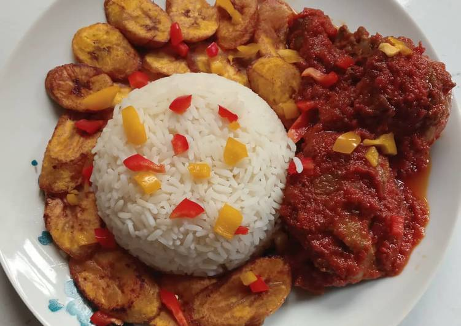

Rice And Stew

Short Description
Tomato stew is a staple eaten all over West Africa with some ingredient
variations based on culture and individual preferences.
Ingredients
- ¼ - 1/2 cup vegetable oil
- 3 pounds chicken cut in pieces
- 4 roma tomatoes, chopped
- 2 habanero peppers
- 2 tbsp tomato paste
- 1 red bell pepper, chopped
- 1 medium onion sliced
- 1/2 teaspoon dried thyme
- 1 Tablespoon Nigerian red pepper (or Cameroonian red pepper)
- 1 teaspoon Accent
- 1 bay leaf
- 1 chicken bouillon cube
- Salt and pepper to taste
- 1 cup of chicken stock
- water as needed
Steps
- Blend the tomatoes, habanero peppers, bell peppers in a blender until pureed.
- In a large pot heat up the vegetable oil and add the sliced onions frying just until the turn golden brown.
- Add the tomato mixture and fry for about 25 minutes until the mixture reduces in size, turns
a deep red, and the oil begins to separate from the tomatoes. Stir continuously to prevent burning
at the bottom.
- Add the tomato paste and fry for an additional 5 minutes.
- Add the chicken stock and seasonings (dried thyme, red pepper, accent, bouillon cube, and bay leaf).
- Stir together, and add more water if needed. Continue to simmer for 15 minutes.
No Nigerian or Cameroonian red pepper? Cayenne pepper works just fine
Serve with rice, beans, or anything of your choice.